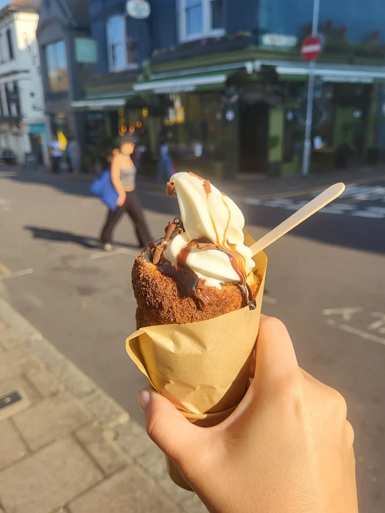
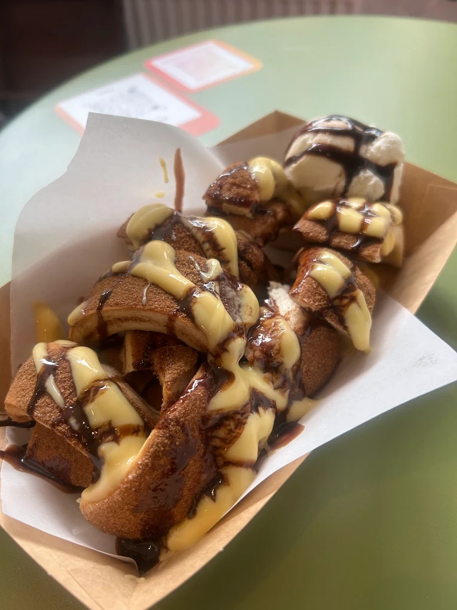

What to Know about Elate
Project Objective
This project was a self-initiated design study to bridge the gap between Elate’s premium physical atmosphere and its digital presence. I identified an opportunity to move beyond standard templates and create a "Digital Flagship" that mirrors the shop’s minimalist, high-end interior.

The Essence of Elate
Located in the heart of the Brighton and Hove area, Elate Coffee is more than a destination for caffeine; it is a sanctuary for the modern connoisseur. Founded on the principle that the perfect cup of coffee is an intersection of science and soul, Elate has established itself as a cornerstone of the local artisan scene. Every bean is ethically sourced and roasted to highlight its unique geographical profile, ensuring a sensory experience that is as sophisticated as it is consistent.

A Legacy of Quality and Craftsmanship
What sets Elate apart is an uncompromising commitment to the "Small Batch" philosophy. In an era of mass-produced convenience, the team at Elate prioritizes the slow, deliberate process of manual brewing and precision espresso extraction. This dedication to craftsmanship is reflected in their rotating seasonal menus, which showcase a curated selection of global roasts, each chosen for its ability to tell a story of origin and expertise.